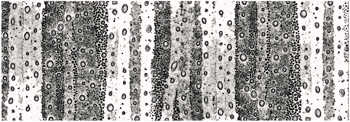
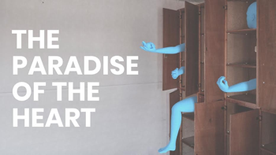

TACTIC started as a Sample-Studios member project. Its aim is to bring a programme of independently curated contemporary art exhibitions to Cork.
Past Tactic Visual Arts programmers:
2015 _ 2017 Emily O'Flynn
2012 _ 2015 Gerald Heffernan
2011 _ 2013 Pamela Myers: co-founder of TACTIC
2011 _ 2012 Liam Slevin: co-founder of TACTIC
Curatorial residencies:
2017_2018 Irene Berkery
Katie O'Grady
2016_2017 Alison Fogarty
Dervla Mulcahy
For further information and images please contact:
tactic@sample-studios.com
Between Something and Nothing
Evgeniya Martirosyan
when
9 February - 24 February 2018
Thursday - Saturday
12pm - 5:30pm
where
TACTIC at The Crypt, St. Luke's Former Church,
O'Mahoney's Ave, St. Luke's Cross, Summerhill North
Cork City
about
Evgeniya Martirosyan's new body of work Between Something and Nothing stems from her interest in philosophy and science. It represents an intuitive response to concepts of time, matter, chaos and transformation. The latest developments in science raise many questions about the nature of reality, as it seems uncertainty and relativity are part of the very fabric of our world. Working with elemental materials and using a broad range of techniques, Martirosyan explores the poetic possibilities of the constantly shifting and elusive state of things.
This exhibition is supported by Cork City Council Arts Office, the Arts Council, and Cork Film Centre. The artist has been supported with graduate residencies from Sample-Studios and the National Sculpture Factory.
The Paradise of the Heart
Tomas Penc and Peter Nash
when
27 January - 9 February 2018
Thursday - Saturday
12pm - 5:30pm
where
Elizabeth Fort,
Barrack Street, Cork.
about
Tomas Penc has successfully completed a BA Honours Degree in Fine Art at CIT Crawford College of Art & Design, Cork, Ireland. During this time, he has developed a basis for an independent art practice which has been recognized by CIT with The Best CIT CCAD Honours Degree Student Award as well as a 6-month residency in one of the leading Irish arts organizations, the National Sculpture Factory.
The approach to his work is open-ended and idea-driven, the resulting artwork is usually project based and often site-specific and takes the form of sculpture, new media projection, and interactive installation. It is embedded in an engaged conceptual and material research with emphasis on human behavior seen through psychoanalysis, existentialist and eastern philosophy. It is concerned with the unresolved relationship we have with present day technology and the possibilities of transcending these ethical and moral challenges.
Peter Nash is an artist originally from Carlisle, Northern England currently based in Cork city. He obtained a BA Honours Degree in Fine Art (Sculpture) from Sheffield Hallam University, England in 2003 and graduated in 2016 with an MA in Art & Process from CIT Crawford College of Art and Design, Cork, being awarded the one-year Graduate Residency Award upon completion of the course.
Nash’s practice holds drawing, animation and sculptural assemblage elements that converge to form tangible thought structures. He investigates our current era of rapid digital evolution where access to a world of information via the Internet has rendered facts instant and disposable. His works are an exploration of human fallibility in an age of digital perfection, mistruth, and increasing automation.